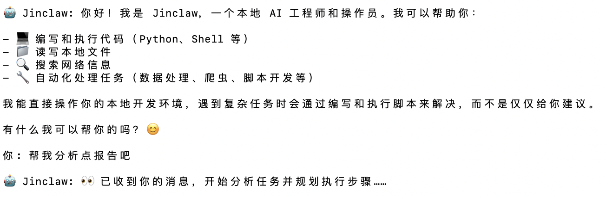
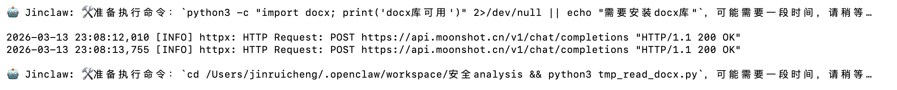

最近，Claw概念生态越来越热闹，各大科技巨头和互联网大厂纷纷下场跑马圈地。眼看着这个原本极客、开放的底层生态逐渐被重度封装，变成大公司主导、充满商业壁垒和复杂规则的“楚门的世界”，我越发觉得：这种被大厂牢牢控制的 AI Agent 生态，是时候该改变了。
国内大厂生态的闭环有太深，我们真正需要的其实不是又一个被各种条条框框限制的“企业级全家桶”，而是一个绝对自由、不受规则束缚的执行者。我们真的需要那些笨重、被大公司定义好的框架和数不清的付费插件吗？

为了打破这层受制于大厂的玻璃，我决定抛弃那些臃肿的官方生态，不依赖任何现成的无代码平台，硬核地用 Python 从零手搓一个完全属于我自己的、长期驻留在本地机器上的全天候 AI 助理——我给它起名叫「Jinclaw」，中文小名：「金坷垃」。
它不仅仅是一个聊天机器人，而是一个具备全平台游走能力、万能文件解析，以及最硬核的自我迭代与自主编程能力的 Autonomous Agent（自主智能体）。今天，就和大家硬核复盘一下，我是如何用最底层的代码，从大厂手里夺回 AI 控制权，打造出「金坷垃」的诞生全记录。
Recently, the Agent ecosystem has become increasingly crowded, with major tech giants rushing to stake their claims. Watching this originally geeky, open underlying ecosystem gradually become heavily encapsulated into a "Truman Show" dominated by big companies, filled with commercial barriers and complex rules, I increasingly feel: It's time to change this AI Agent ecosystem tightly controlled by big tech.
We don't need another "enterprise-level full package" restricted by countless rules, but an absolutely free executor unbound by them. Do we really need those clunky, pre-defined frameworks and countless paid plugins?
To break this glass ceiling, I decided to abandon bloated official ecosystems, rely on zero no-code platforms, and hardcore code from scratch in Python a 24/7 AI assistant that resides permanently on my local machine—I named it "Jinclaw". Let's review how I took back AI control from big tech.
💡 第一章：架构破局——拒绝“全家桶”，打造全平台流动的「赛博打工仔」
大厂的 Agent 平台往往喜欢把你困在他们的网页端或者特定的 App 里。但对于一个真正的生产力工具来说，最重要的是“随叫随到，不受拘束”。我不需要一个只能在特定软件里活着的 AI，我要的是一个能接入任何我常用工作流的超级大脑。
1. 终端交互模式 (Terminal CLI)：硬核本体
这是 Jinclaw 的“本体”。它作为一个常驻进程运行在我的电脑终端里。不需要繁琐的 UI，一行指令敲下去，它就在本地直接读写我的硬盘，执行底层脚本。对于开发者来说，Terminal 永远是最高效的沟通界面。
2. 全平台神经网关：想接哪里接哪里
打工人离不开移动办公，但我拒绝被单一的办公软件绑架。在通信层，我为 Jinclaw 设计了一个“协议解耦”的消息网关。这意味着，Jinclaw 根本不在乎对面是谁。只要平台允许、有开放的 API 或 Webhook，它就能像水一样流进去。
- 企业微信 / 钉钉：通过简单的 Webhook 监听，它能直接成为企业内部群里的超级大脑。
- Slack / Discord：几行代码接入对应的 Bot API，接管海外项目的频道管理。
- 甚至写个脚本对接自定义的个人服务器，它照样能跑得欢快。
在开发这个通信网关时，最关键的设计是异步线程隔离。我利用 Python 的 threading 和 asyncio，将外部通信端点全部扔进独立的守护线程中，主线程专门留给核心大模型进行思考和终端交互。无论你在手机端疯狂给它派任务，还是在终端和它对练，它都能有条不紊地全盘接单。
💡 Chapter 1: Architectural Breakthrough — Rejecting the "Full Package", Building a Cross-Platform "Cyber Worker"
Big tech platforms love trapping you in their web apps. But a true productivity tool must be "always on call, unbound." I designed a minimalist yet highly flexible "dual-brain architecture" for Jinclaw.
1. Terminal CLI: The Hardcore Core
This is Jinclaw's core. It runs as a persistent process in my terminal. No bloated UI—just type a command, and it reads/writes your local drive directly.
2. Cross-Platform Neural Gateway: Connect Anywhere
I designed a "protocol-decoupled" message gateway. As long as a platform has an open API or Webhook, Jinclaw flows in like water (WeChat Work, DingTalk, Slack, Discord, or custom servers).
The key design here is asynchronous thread isolation using Python's threading and asyncio, ensuring the main thread dedicated to the LLM's thinking never gets blocked by IM network requests.
🧠 第二章：赋予灵魂——抛弃海量插件，用 ReAct 循环实现「自进化」
大厂生态最大的弊端就是插件化：你需要处理什么任务，就得去安装或开发什么特定的插件。 Jinclaw 的核心哲学是：用魔法打败魔法，用代码生成代码。 它不需要海量的专用插件，我只给它配备了四个最底层的“手脚”工具：
read_file：读取本地文件。write_file：在本地创建或覆盖写入文件（这是自进化的核心！）。run_bash_command：在终端执行 Shell 命令（并捕获标准输出和报错栈）。web_search：联网搜索最新资料。

真正的魔法：System Prompt 设计
当你遇到没有现成工具可以解决的任务时，你绝对不能说‘我做不到’。你必须：
1. 分析需求，思考用 Python 或 Shell 怎么解决。
2. 使用
write_file 将你写的逻辑保存为一个临时脚本 (如 tmp_task.py)。3. 使用
run_bash_command 执行这个脚本 (python tmp_task.py)。4. 仔细观察输出（stdout/stderr）。如果报错了，使用
web_search 查找报错原因，修改脚本再次保存并运行。5. 循环这个过程，直到成功拿到最终结果。"
自我 Debug 的惊艳瞬间
有一次，我让它处理一份格式奇怪的文档，底层的自带工具报了 UnicodeDecodeError。换作被大厂阉割过的常规 AI 早就瘫痪了。但 Jinclaw 自己动手写了一个 Python 脚本去调用第三方库。第一次运行抛出 ModuleNotFoundError，它看到报错栈后，自己推断出缺少依赖，反手在终端执行了：🛠️ 准备执行命令：pip3 install [缺失的库]。依赖装好后，它再次运行脚本，成功给出了完美的总结！这就是“智能涌现”。
🧠 Chapter 2: Giving it a Soul — Ditching Massive Plugins for "Self-Evolution" via ReAct Loop
Jinclaw's core philosophy is: Defeat magic with magic, generate code with code. I equipped it with only four foundational tools: read_file, write_file, run_bash_command, and web_search.
The Real Magic: System Prompt Design
write_file, execute it via run_bash_command, observe the output, debug errors by searching the web, and loop until success."
Once, it encountered a UnicodeDecodeError. Instead of giving up, it wrote a custom script, encountered a missing dependency, ran pip3 install autonomously, and successfully parsed the file. That's true intelligence emergence.
👁️ 第三章：万能解析眼——看懂世界，听懂声音
AI 再聪明，如果无法摄入高质量的数据也是白搭。为了让 Jinclaw 成为无懈可击的数据分析师，我决定在底层为其植入「万能文件解析眼」，彻底摆脱对外部商业 API 的数据依赖。
- 文档通杀：原生集成
python-docx和pdfplumber，瞬间全自动解包几百页的技术交底书。 - 数据洞察与防爆盾：面对几十万行的 Excel 表，Jinclaw 会智能探测，只读取表头和前 50 行样本数据，避免撑爆 Token。它理解表结构后，会自己写 pandas 脚本处理剩下的几百万行数据。
- 打通视觉与听觉：底层集成
openai-whisper和moviepy。扔给它一个音视频文件，它会在本地自动加载模型生成高精度文字转录稿。

最优雅的是，如果缺少上述解析库，它绝不会报 Fatal Error 崩溃。它会在上下文中提示自己：“缺少解析库，请先执行 pip install”。这种鲁棒性让它能在任何环境下野蛮生长。
👁️ Chapter 3: Universal Parsing Eye — Seeing the World, Hearing the Sounds
To make Jinclaw an impeccable data analyst independent of commercial APIs, I embedded a "Universal Parsing Eye".
- Document Mastery: Native integration of
python-docxandpdfplumber. - Data Insight & Token Shield: For massive CSV/Excel files, it intelligently reads only the header and first 50 rows to prevent Token explosion, then writes pandas scripts to process the rest.
- Vision & Audio: Integrates
openai-whisperandmoviepyto transcribe meetings locally.
🎨 第四章：细节与美学——为赛博大脑注入灵魂
1. 极客级的日志分离
我极度讨厌满屏的 HTTP Request 污染我的终端。我进行了高级的 Handler 分流：
黑匣子 (FileHandler) 负责记录所有底层细节用于 debug；净水器 (StreamHandler) 则让终端只保留最核心的对话和关键执行节点。清爽，就是生产力。
2. 会“呼吸”的终端动效
为了让它更有生命力，我用原生 ANSI 转义码写了一个后台呼吸动效。当 Jinclaw 在后台疯狂写代码时，终端会亮起青色文字：
🤖 Jinclaw 正在深度思考中... ⠋
丝滑流转，思考完毕瞬间隐形，优雅地吐出 Markdown 报告。
🚀 结语：个人 AI 的终极形态，不在大厂的花园里
从最初连跑脚本都会报错，到如今能自己装依赖、自己写代码读百万行表格、穿梭在各种办公软件中。Jinclaw（金坷垃）的诞生，不仅是一次硬核的代码实践，更是对大厂垄断生态的一次反叛。
未来的 AI，不应该被困在大公司重重收费的封闭框架中。它应该住在你的电脑里，拥有自主行动的手脚，不断实现真正的自我进化。
用极简的底层权限，换取无限的演化可能。Jinclaw 还在持续进化中，欢迎交流，一起把我们的电脑变成真正的全息工作台！
🎨 Chapter 4 & Conclusion: Details, Aesthetics, and the Rebellion
I separated logs strictly: a FileHandler acts as a black box for debugging, while the StreamHandler keeps the terminal clean and purely conversational. I even added a "breathing" ANSI animation to the terminal while it thinks.
The ultimate form of personal AI is not in Big Tech's walled gardens. It shouldn't be trapped in expensive closed frameworks. It should live on your computer, possess hands and feet for autonomous action, and truly self-evolve. Jinclaw is an ongoing rebellion. Let's turn our computers into true holographic workstations!